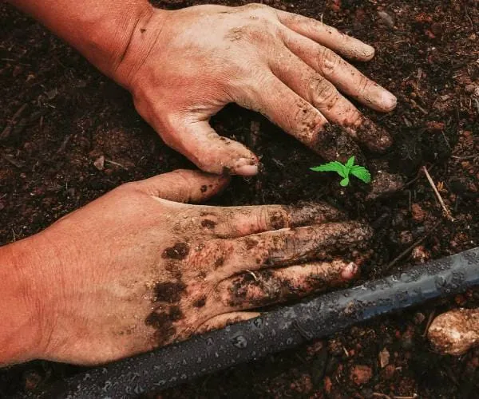

Boas Práticas Agrícolas
Produzir bem começa com manejo correto.
Uma lavoura saudável depende de observação, planejamento e prevenção. O manejo adequado ajuda a reduzir o aparecimento de pragas e doenças, melhora o aproveitamento dos recursos naturais e fortalece o desenvolvimento das plantas ao longo de todo o ciclo produtivo.
- Rotação de culturas para preservar a qualidade e o equilíbrio do solo.
- Uso consciente de métodos preventivos e estratégias de controle integrado.
- Planejamento do plantio conforme clima, época e exigências da cultura.

Dica Técnica:
O monitoramento frequente ajuda a identificar problemas antes que eles avancem.